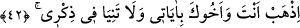
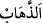

Bu âyet, daha önce geçen “Ben seni seçtim.” (Tâhâ, 20/13) âyetini hatırlatır. Yâni
seni insanlar üzerine peygamberlikle ve kelamımla seçtim, demektir. Bu âyet, Allâh’ın
Mûsâ (a.s.)’a verdiği büyük nimeti, bir padişahın seçkin adamlarından bazısını
kendisine daha yakın kılmasına, onu kendisi için seçmesine ve önemli bazı işlerini ona
havâle etmesine benzetmektedir.
Kâşifî der ki: “Seni kendi muhabbetim için seçtim ve hâlis kıldım, yâni seni dost
edindim.”
Şeyhzâde Hâşiye’sinde de şöyle der: “Yâni beni sevmen, benim irâdeme ve
muhabbetime göre hareket etmen, sana emrettiğim huccetimi ikâme etmen ve benim
peygamberliğimi tebliğ ile meşgul olman, hareketlerinde ve sekenâtında nefsin veya
başkası için değil, sadece benim rızam için bulunman için seni seçtim.”
Allâh’ın Hz. Mûsâ’yı kendisi için seçmesinin hakîkati, onu celâl ve cemâl sıfatlarının
nurlarının yansıdığı bir ayna kılmasıdır.
âyette, havâssın/seçkin kulların bu özel mânâ için, diğer kulların ise bir kısmının
dünya, bir kısmının âhiret için yaratıldığına işâret vardır. Havâs, Allah Teâlâ’nın gerçek
kullarıdır. Onlar bâtıla, yâni mâsivâya meyil lekesinden temizlenmişlerdir.
Lebîd şöyle der:
İyi bilin ki Allah dışında her şey bâtıldır.
Ve şüphesiz her nimet yok olacaktır.
Bir hadîste şöyle buyrulmuştur: “Allah bir kulunu severse onu belâlara dûçar kılar.
Eğer sabrederse onu seçer, belaya rızâ gösterirse kendine has kılar.”[78]
Sabır başa gelen musîbetlerin acısını yutması, rızâ ise takdirin acılığı karşısında
kalbin sevinmesidir. Allah bir kulunu kendisine has kılmak isterse onu belaların ortasına
atar, sonra da onun cevherini kendinden başka her şeyden temizler. Bu menzile giden yol
pek çok zorluklarla doludur.
Molla Câmî der ki:
Aşk sahrâsını kat’etmek kolaydır deme
Ki o sahrânın kumları belâ ve musîbet dağlarıdır
Allahım, bizi sabreden, şükreden, rızâ gösteren ve menzile ulaşan kullarından eyle!
42. Sen ve kardeşin birlikte âyetlerimi götürün. Beni anmayı ihmal etmeyin.
Ey Mûsâ! “Sen ve kardeşin birlikte âyetlerimi” mûcizelerimi “götürün.” “
”